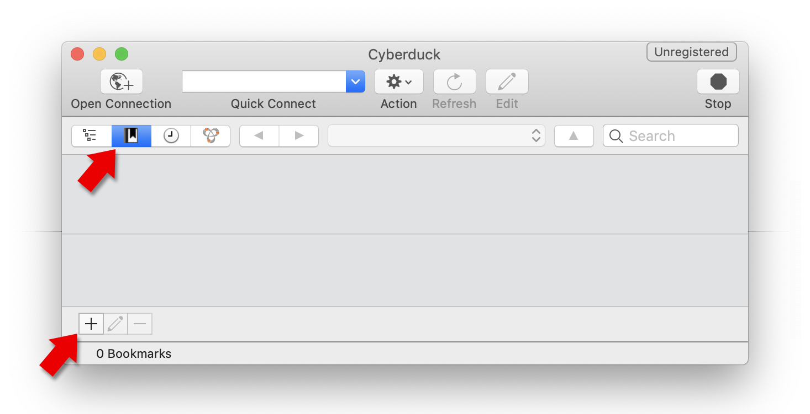
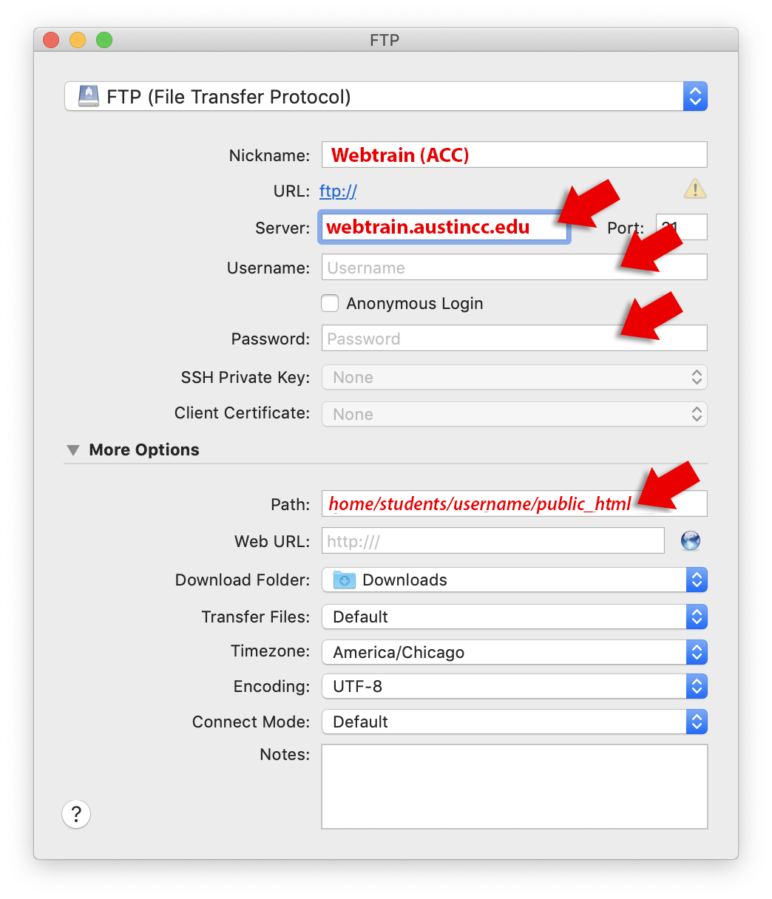

Uploading your website
File Transfer Protocol (FTP) is the way you move files from your computer to your webserver. You'll want a dedicated FTP program such as the free Cyberduck instead of having to log in to your commercial web hosting account every time you need to edit your site, since you make those edits to the local copy on your computer, then upload the edited file(s).
TIP: You may have used Filezilla in your HTML classes, but Cyberduck has a nicer interface and is a tiny bit easier to use. Both programs work essentially the same way, so you can keep using Filezilla if you prefer it.
When you purchase a hosting plan from a commercial provider, you may receive an email with the FTP address, username and password to log in to your site, or more often, you'll use the same login/password you use to access your hosting account. These will be required by your FTP program to upload files. Reliable, inexpensive hosts include BlueHost and HostGator. GoDaddy is a well-known option, but not recommended, since they charge for features most hosts include for free).
Uploading files to Webtrain with Cyberduck
Once you download and install Cyberduck, open it, and ensure you are looking at the bookmarks list (2nd icon at top left,) then click the "+" at the lower left:

In the FTP connection dialog, enter a meaningful nickname for this connection (like "Webtrain" or "ACC"), the server name (webtrain.austincc.edu), and the username/password you received when you started the Web Developer Program (if you lost this info, contact the Program Coordinator). Make sure the Path is "home/students/username/public_html" (use your actual username):

Close this window, and double-click the bookmark you created. This opens your remote files list (the files on Webtrain). Drag files/folders from your computer into this window to upload them to your root website, which is accessible in a browser at webtrain.austincc.edu/~username.
Subdirectories
You don't need multiple domains for multiple websites. You can isolate different sites in a single web domain simply by putting each in its own folder (a.k.a. subdirectory). Be sure not to use capital letters, spaces, or special characters in your subdirectory names (or ANY file or folder name).
The first time you connect to Webtrain with Cyberduck, you'll find yourself in your root webspace. This space can be accessed with the URL http://webtrain.austincc.edu/~yourUsername/, so you'll want to create an index.html file that's served by default (otherwise Webtrain will redirect to a generic website, which is it's equivalent of a 404 error—the error a webserver shows when you request a nonexistant file or directory). You may have already created this file in your Beginning HTML class.
You'll want to create subdirectories for your different classes (and possibly your Capstone project). Do this by selecting "New folder" from the Actions icon at the top (the cogwheel). Again, don't use spaces, capital letters, or special characters. Then create a bookmark leading directly into that subdomain:
- Click the Bookmark icon at the top left of Cyberduck.
- Right-click the original Webtrain bookmark and choose "Duplicate".
- With the duplicate selected, click the EDIT (pencil) icon at the bottom left.
- Add the name of your subdirectory to the end of the Path, and change the nickname of this bookmark.
- Repeat the process for every subdirectory you need*.
*you'll want an index.html file in each subdirectory. If a subdirectory is empty, the server will respond with a 404 error. If there are files in the directory but no index.html, Webtrain will show the list of files, but commercial web hosts will show a 403 error, preventing your files from being exposed to the public.
Now when you want to edit a specific site, just double-click the corresponding bookmark, and you'll never comingle your web files.
To upload files from your computer, Double-click the appropriate bookmark, and simply drag files/folders into the Cyberduck window**.
If you need to download a file from Webtrain (for example, if you mess up your local copy and want to replace it with the unedited version), just drag the file out of the Cyberduck window to your computer**.
**be sure to keep files in the same relative position within your project folder so relative file paths are maintained!. Unlike most commercial webhost's file uploader that force you to upload individual files into individual directories, FTP programs like Cyberduck allow you to upload entire folders and maintain the nested file organization inside.